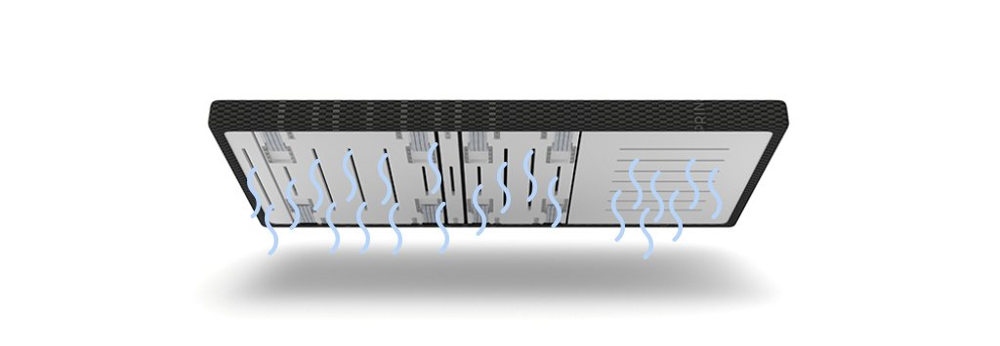
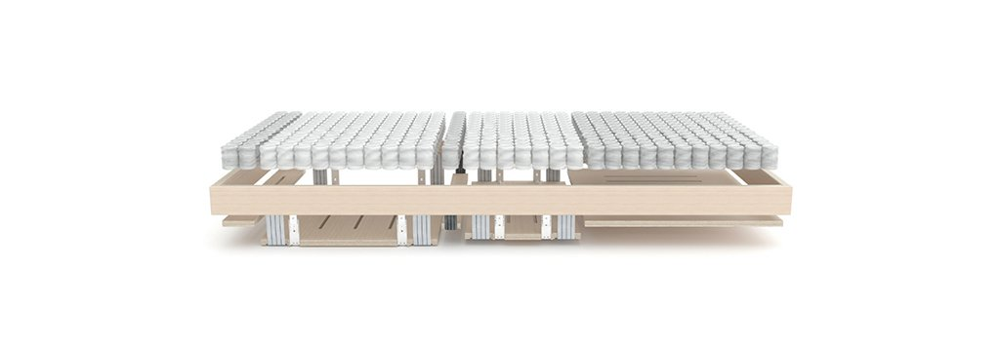
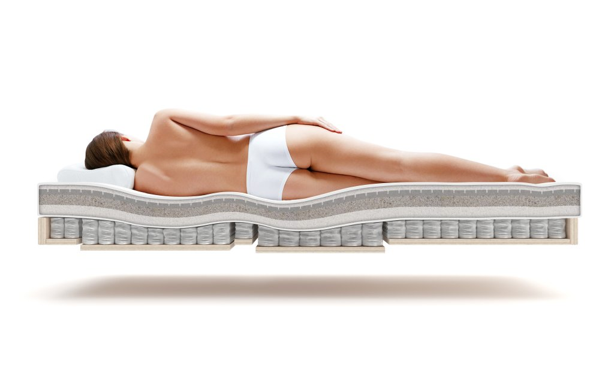
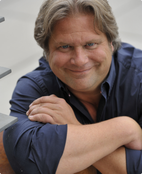

Schlaf ist für unsere Gesundheit wichtiger als Ernährung oder Sport.
Prof. Dr. Matthew Walker, Autor von “Why we sleep” und Direktor des Schlaf-Instituts, Berkley
Gesund durch Schlaf.
Schlaf beeinflusst unser gesamtes Leben. Er ist einer der wichtigsten und zugleich völlig unterschätzte Aspekte eines gesunden, langen und glücklichen Lebens. Schlaf reguliert unsere Emotionen, stärkt das Immunsystem stellt unsere Verdauung ein und steuert unseren Appetit. Schlaf kann unser Energie-Level verbessern, Hormone regulieren, Krebs, Alzheimer und Diabetes vorbeugen sowie den Alterungsprozess verlangsamen.
Ein Drittel unseres Lebens Schlafen wir.
Doch hat die Weltgesundheitsorganisation (WHO) jüngst den Schlafmangel in Industrienationen – also auch Deutschland – zur Epidemie erklärt. Weniger als 8h Schlaf pro Nacht verkürzt das Leben auf Dauer. Die Einstellung „Schlafen kann ich, wenn ich tot bin“ ist also nicht ratsam. Im Gegenteil. Gesunder, erholsamer und ausreichender Schlaf verlängert das Leben.
Wir streben mit unserem patentierten Schlafsystem deshalb nach der perfekten Lösung für erholsamen und gesunden Schlaf. Dabei achten wir auf anatomische, physiognomische, komfort-individuelle und auch wirtschaftliche Aspekte. Gesunder Schlaf für bestehende Betten, als Plug & Play Lattenrost-Ersatz, oder als komplett neues Schlafsystem, integriert in Design-Boxspringbetten.

Einzigartige Luftzirkulation
Lattenrost-Systeme wurden ursprünglich nur zur Belüftung der Matratzen entwickelt. Sie haben bis heute nicht entscheidend für zusätzlichen Feder-Komfort gesorgt. Und Boxspringbett-Untergestelle waren bis heute eben nur eine „Box“, mit vielen Federn, aber keiner Möglichkeit die Matratze ausreichend zu belüften.
Die Double Spring Box hingegen ist mit dem einzigartigen Belüftungssystem Air Change System (A.C.S.) ausgestattet. Die mit 18 statischen Auslässen für perfekte Luftzirkulation versehene Box bietet damit ständige Belüftung als auch punktuellen Austausch. Verbrauchte Luft wird durch jede neue Belastung nach unten über die Bodenfederung herausgedrückt und erneuert sich automatisch. Dies zählt für Ihre Gesundheit. Schließlich transpirieren und atmen Sie auch im Schlaf sehr intensiv. Und Wasser sowie verbrauchte Luft sollte sich nicht ansammeln, sondern abfließen bzw. sich erneuern können.


Individueller Anpassungskünstler
Die Double Spring Box passt sich ihrer Figur an und lässt an Druckstellen nach. Die Double Spring Box ist für jeden geeignet, egal ob Seiten-, Bauch-, oder Rückenschläfer. Sie lässt sich als einziges Boxspringbett-Untergestell mit einfachen Handgriffen individuell einstellen. Bei der Lieferung ist ihre Unterfederung schon in einer mittleren Position eingestellt. Sollten Sie den Wunsch nach einer Veränderung im Bereich der Komfortzonen haben, können Sie die Unterfederung individuell einstellen. Sie können den Härtegrad durch das Aus- und Einhängen der Zugfeder-Regulierung sowohl verringern als auch erhöhen.
Individuell einstellbarer Härtegrad
Durch einfaches Aus- und Einhängen der Zugfeder-Regulierung
Besonders atmungsaktiv und antiallergisch
Der Qualitäts-Drell, also der Bezugsstoff der Double Spring Box, ist äußerst atmungsaktiv, robust, anschmiegsam und antiallergisch. Dazu ebenso rutschfest, sodass Ihre Matratze perfekt aufliegen kann. Der Qualitäts-Drell ist so Wasserdurchlässig, dass sich ein Aufstauen von Feuchtigkeit durch Transpiration vermindert, in Kombination mit dem Belüftungssystem D.A.E.S. sogar gänzlich vermieden werden kann.

Dr. Michael Feld
Deutschlands bekanntester Schlafexperte, Autor zahlreicher Ratgeber und Direktor des Instituts für Schlaf und Regeneration
Mit der Double Spring Box leiten wir die Revolution des 21. Jahrhunderts im Bettenmarkt ein. Sie löst nach hunderten von Jahren den Lattenrost, dessen Konstruktion veraltet ist, ab. Wir haben es geschafft ein Matratzenuntergestell zu entwickeln, welches ohne die hohen Anschaffungskosten eines Boxspring-Bettes in nahezu jedes Bett im Austausch gegen den Lattenrost passt.